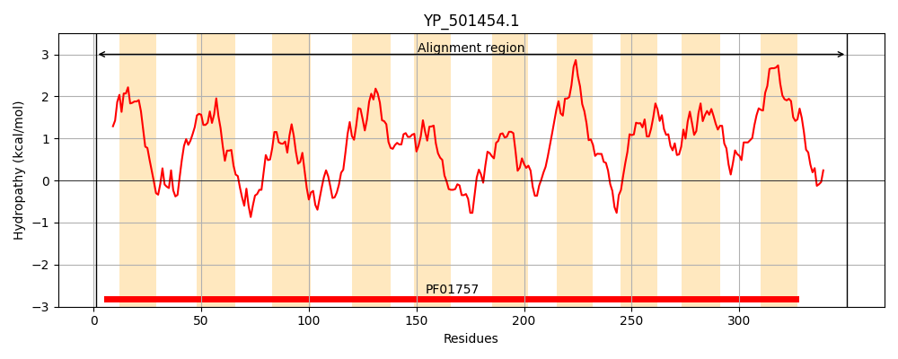
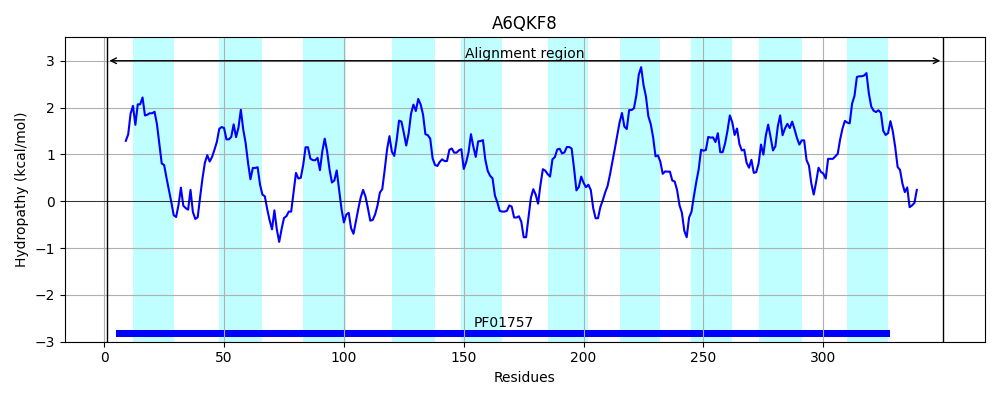
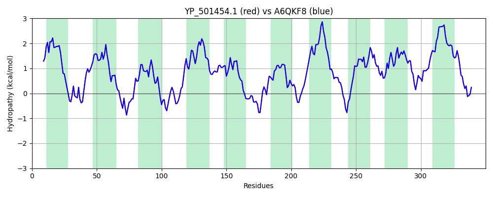

Hit Accession: A6QKF8
Hit TCID: 9.B.97.1.7
Hit Description: gnl|BL_ORD_ID|626 gnl|TC-DB|A6QKF8|9.B.97.1.7 Intercellular adhesion protein IcaC OS=Staphylococcus aureus (strain Newman) GN=icaC PE=4 SV=1
Mach Len: 350
e:0.000000
Query TMS Count : 10
Hit TMS Count: 10
TMS-Overlap Score: 9.200000
Predicted Substrates:CHEBI:18154;polysaccharide
BLAST Alignment:
Score: 1804 , Bit scores: 699 bits, E-value: 0.0e+00, Alignment length: 350, Percentage identity: 100
Query: 1 MKKIRLELVYLRAIICAIIIITHLLTQITLKHENMEGGSLVLQFYIRNIVIFGTPCFIILSQLLTTLNYQKVTYRYLTTRVKYILIPYILMGLFYSYSESLLTDSSFNKQFIENVLLGQWYGYFIVVIMQFFILSYIIFKINYNLFNSKILLLLSFILQQSFLYYFTNNTAFHDTVLHYYPLSENTIIFGWIFYFFLGAYMGYNYERVLNFLERYLVIMIVLAVATYFVFIALANGDYWNVTSFSYSLTPYNSIMFIVILGICTHFKTMLFNTIQMISAFSFFIYLLHPIILDSLFAYTNIFEDNTMVFLAISLLFILGLCIGVGMILREFYIFRFIIGKQPYKLNINAY 350
MKKIRLELVYLRAIICAIIIITHLLTQITLKHENMEGGSLVLQFYIRNIVIFGTPCFIILSQLLTTLNYQKVTYRYLTTRVKYILIPYILMGLFYSYSESLLTDSSFNKQFIENVLLGQWYGYFIVVIMQFFILSYIIFKINYNLFNSKILLLLSFILQQSFLYYFTNNTAFHDTVLHYYPLSENTIIFGWIFYFFLGAYMGYNYERVLNFLERYLVIMIVLAVATYFVFIALANGDYWNVTSFSYSLTPYNSIMFIVILGICTHFKTMLFNTIQMISAFSFFIYLLHPIILDSLFAYTNIFEDNTMVFLAISLLFILGLCIGVGMILREFYIFRFIIGKQPYKLNINAY
Sbjct: 1 MKKIRLELVYLRAIICAIIIITHLLTQITLKHENMEGGSLVLQFYIRNIVIFGTPCFIILSQLLTTLNYQKVTYRYLTTRVKYILIPYILMGLFYSYSESLLTDSSFNKQFIENVLLGQWYGYFIVVIMQFFILSYIIFKINYNLFNSKILLLLSFILQQSFLYYFTNNTAFHDTVLHYYPLSENTIIFGWIFYFFLGAYMGYNYERVLNFLERYLVIMIVLAVATYFVFIALANGDYWNVTSFSYSLTPYNSIMFIVILGICTHFKTMLFNTIQMISAFSFFIYLLHPIILDSLFAYTNIFEDNTMVFLAISLLFILGLCIGVGMILREFYIFRFIIGKQPYKLNINAY 350 | Protein Hydropathy Plots: |
|---|
|  |  |
Pairwise Alignment-Hydropathy Plot:
|
|---|
|  |